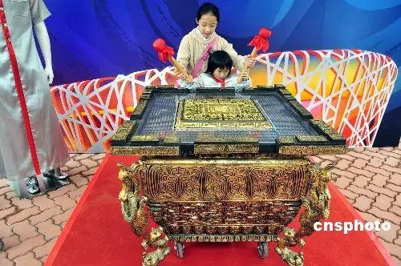

课本
第一单元
一花一鸟总关情。
- 初步了解课文借助具体事物抒发感情的方法。
- 写一种事物，表达自己的感情。
bái lù 《白鹭》 guō mò ruò ——郭沫若1
正文
白鹭2是一首精巧的诗。
色素的配合，身段的大小，一切都很适宜。
白鹤3太大而嫌生硬，即使如粉红的朱鹭4或灰色的苍鹭5，也觉得大了一些，而且太不寻常了。
然而白鹭却因为它的常见，而被人忘却了它的美。
那雪白的蓑毛6，那全身的流线型结构，那铁色的长喙7，那青色8的脚，增之一分则嫌长，减之一分则嫌短，素9之一忽10则嫌白，黛11之一忽则嫌黑。
在清水田12里，时13有一只两只白鹭站着钓鱼，整个的田便成了一幅嵌在玻璃框里的画。田的大小好像是有心人为白鹭设计的镜匣14。
晴天的清晨，每每看见它孤独地站立于小树的绝顶，看来像是不安稳，而它却很悠然15。这是别的鸟很难表现的一种嗜好。人们说它是在望哨，可它真是在望哨吗?
黄昏的空中偶见白鹭的低飞，更是乡居生活中的一种恩惠。那是清澄的形象化，而且具有生命了。
或许有人会感到美中不足，白鹭不会唱歌。但是白鹭本身不就是一首很优美的歌吗?
——不，歌未免太铿锵16了。
白鹭实在是一首诗，一首韵17在骨子里的散文诗18。
说明
《白鹭》这篇文章的作者是郭沫若。
郭沫若（1892 年 11 月 16 日-1978 年 6 月 12 日），原名郭开贞，字鼎堂，号尚武，笔名有沫若、麦克昂、石沱、郭鼎堂、羊易之、高汝鸿等。他是中国现代文学家、诗人、社会活动家、史学家、考古学家。其代表作有诗集《女神》《星空》；剧本《屈原》《蔡文姬》等。
《白鹭》作于 1942 年 10 月 31 日，当时正值抗日战争第二阶段，蒋介石发动第二次反共高潮。郭沫若当时是中国共产党党员，任国民党政府语言文化工作委员会主任，以双重身份进行抗日。他说：“中国目前是最为文学的时代，善恶对立、忠奸对立异常鲜明，人性美发展到极点，人性恶也发展到极点。”所以他这个时期的杂文以爱国反奸为中心内容，赞颂爱国者的忠义揭露卖国者的奸恶。《白鹭》以真诚的笔触描绘了白鹭的生态特征，赞扬了寻常的事物中蕴含着内在美，隐晦地借孤独而优美的白鹭来表达自己的政治追求。
在南国优美的田野中、明净清浅的小河边，一种常见的水禽被人尊为水边隐士、江田长者的白鹭，出没其间把乡居生活点缀得特别富有情趣。郭沫若以其特殊的观察力，对白鹭进行了热情的讴歌。
《白鹭》是《丁东草》三章（丁东、白鹭、石榴）中的一章，最初发表于 1943 年 2 月《文艺生活》第三、第四期，后收入小说散文集《波》中。
🔑 课后问答
- 从以下几个方面能感受到“白鹭是一首精巧的诗”：
- 色素和身段适宜：白鹭的雪白蓑毛、流线型结构、铁色长喙、青色的脚，颜色和形态搭配完美，增一分减一分都会破坏这种美。
- 不同场景皆美：在清水田里钓鱼时，整个田成了一幅画；晴天清晨孤独站立于小树绝顶，很悠然；黄昏空中低飞，给乡居生活带来恩惠。
- 常见却被忽视的美：白鹭因常见而被人忘却其美，但它本身的美是实实在在存在的。
- 课文第 6 - 8 自然段描绘的三幅优美图画及名字分别为：
- 第 6 自然段：“水田钓鱼图”。
- 第 7 自然段：“枝头独立图”。
- 第 8 自然段：“黄昏低飞图”。
luò huā shēng 《落花生》 xǔ dì shān ——许地山19
正文
我们家的后园有半亩空地。母亲说:“让它荒着怪可惜的，你们那么爱吃花生，就开辟出来种花生吧。”我们姐弟几个都很高兴，买种，翻地，播种，浇水，没过几个月，居然收获了。
母亲说:“今晚我们过一个收获节，请你们的父亲也来尝尝我们的新花生，好不好?”母亲把花生做成了好几样食品，还吩咐就在后园的茅亭里过这个节。
那晚的天色不大好，可是父亲也来了，实在很难得。
父亲说:“你们爱吃花生吗?”
我们争着回答:“爱!”
“谁能把花生的好处说出来?”
姐姐说:“花生的味道很美。”
哥哥说:“花生可以榨油。”
我说:“花生的价钱便宜，谁都可以买来吃，都喜欢吃。这就是它的好处。”
父亲说:“花生的好处很多，有一样最可贵。它的果实埋在地里，不像桃子、石榴、苹果那样，把鲜红嫩绿的果实高高地挂在枝上，使人一见就生爱慕之心。你们看它矮矮地长在地上，等到成熟了，也不能立刻分辨出来它有没有果实，必须挖起来才知道。”
我们都说是，母亲也点点头。
父亲接下去说:“所以你们要像花生，它虽然不好看，可是很有用。”
我说:“那么，人要做有用的人，不要做只讲体面，而对别人没有好处的人。”
父亲说:“对。这是我对你们的希望。”
我们谈到深夜才散。花生做的食品都吃完了，父亲的话却深深地印在我的心上。
说明
《落花生》这篇散文创作于 20 世纪 20 年代。当时的社会背景较为复杂，新文化运动倡导个性解放和自由，人们开始重新审视传统的价值观和道德观念。作者许地山20以落花生为喻，通过讲述一家人围坐谈论花生的故事，传达了一种朴实无华、默默奉献、注重内在价值的人生理念，倡导人们要做像花生一样有用的人，而不仅仅追求外表的体面。
🔑 课后问答
- 课文围绕“落花生”写了以下内容：
- 母亲提议开辟空地种花生，几个月后收获了花生。
- 母亲把花生做成食品，在后园茅亭里过收获节。
- 一家人谈论花生的好处。
- “我”明白了父亲希望“我们”做像花生一样有用的人的道理。
- 从课文中的对话可以看出花生具有的特点：花生的果实埋在地里，不炫耀自己，外表不好看但很有用。父亲想借花生告诉“我们”：人要做有用的人，不要做只讲体面，而对别人没有好处的人。
- 花生会让我们想到那些默默无闻作贡献的人。下面这些事物呢？
- 竹子：竹子四季常青，笔直挺立。它让我想到了那些坚守原则、刚正不阿的人。就像包拯，一生公正廉洁，不畏权贵，为百姓伸张正义。他如同竹子一般，无论面对何种风雨，都坚守着内心的正义和道德准则，不为外界的诱惑和压力所动摇。
- 梅花：梅花在寒冬中独自绽放，傲雪凌霜。这让我想到了边防战士，他们在艰苦恶劣的环境中坚守岗位，保卫着祖国的边疆。无论环境多么寒冷和艰难，他们都像梅花一样，坚韧不拔，默默奉献，用自己的忠诚和勇敢为国家和人民带来安宁。
- 蜜蜂：蜜蜂辛勤地采集花粉，酿造蜂蜜。这使我联想到那些不辞辛劳的教师们，他们如同蜜蜂，每天在教育的花园里忙碌，传播知识的花粉，培育着一代又一代的学子，为社会培养出无数的人才，却不求回报。
- 路灯：路灯在夜晚默默照亮道路，为行人指引方向。这让我想起了清洁工们，他们起早贪黑，在城市的大街小巷清扫垃圾，无论严寒酷暑，都坚守在自己的岗位上，就像路灯一样，为人们创造一个整洁、明亮的生活环境。
guì huā yǔ 《桂花雨》 qí jūn ——琦君21
正文
中秋节前后，正是故乡桂花22盛开的时节。
小时候，我无论对什么花，都不懂得欣赏。父亲总是指指点点地告诉我，这是梅花23，那是木兰花24……但我除了记些名字外，并不喜欢。我喜欢的是桂花。桂花树的样子笨笨的，不像梅树那样有姿态。不开花时，只见到满树的叶子;开花时，仔细地在树丛里寻找，才能看到那些小花。可是桂花的香气，太迷人了。
故乡靠海，八月是台风季节。桂花一开，母亲就开始担心了:“可别来台风啊!”母亲每天都要在前后院子走一回，嘴里念着:“只要不来台风，我就可以收几大箩。送一箩给胡家老爷爷，送一箩给毛家老婆婆，他们两家糕饼做得多。”
桂花盛开的时候，不说香飘十里，至少前后左右十几家邻居，没有不浸在桂花香里的。桂花成熟时，就应当“摇”。摇下来的桂花，朵朵完整、新鲜。如果让它开过了，落在泥土里，尤其是被风吹落，比摇下来的香味就差多了。
摇花对我来说是件大事，我总是缠着母亲问:“妈，怎么还不摇桂花呢?”母亲说:“还早呢，花开的时间太短，摇不下来的。”可是母亲一看天上布满阴云，就知道要来台风了，赶紧叫大家提前摇桂花。这下，我可乐了，帮大人抱着桂花树，使劲地摇。摇哇摇，桂花纷纷落下来，我们满头满身都是桂花。我喊着:“啊!真像下雨，好香的雨呀!”
桂花摇落以后，挑去小枝小叶，晒上几天太阳，收在铁盒子里，可以加在茶叶里泡茶，过年时还可以做糕饼。全年，整个村子都浸在桂花的香气里。
我念中学的时候，全家到了杭州。杭州有一处小山，全是桂花树，花开时那才是香飘十里。秋天，我常到那儿去赏桂花。回家时，总要捡一大袋桂花给母亲。可是母亲说:“这里的桂花再香，也比不上家乡院子里的桂花。”
于是，我又想起了在故乡童年时代的“摇花乐”，还有那摇落的阵阵桂花雨。
说明
作者琦君25以细腻的笔触回忆了童年时在家乡摇桂花的美好经历。创作背景可能与作者对故乡的深深眷恋和对童年美好时光的怀念有关。在岁月的流逝中，通过文字来重温那些温暖而珍贵的记忆。
🔑 课后问答
- 桂花给“我”带来的美好回忆有：
- 摇桂花时的欢乐场景，桂花纷纷落下，像下雨一样，“我”满心欢喜。
- 桂花摇落后，挑拣、晾晒，用于泡茶、做糕饼，让整个村子都浸在香气里。
- 中学时在杭州赏桂花，给母亲带桂花。
- 读下面的句子，体会其中蕴含的感情。
- “桂花盛开的时候，不说香飘十里，至少前后左右十几家邻居，没有不浸在桂花香里的。”
答：这句话蕴含着作者对桂花香气浓郁、传播范围广的自豪和喜悦之情，同时也展现出邻里之间因桂花香气而共享的美好氛围。 - “这下，我可乐了，帮大人抱着桂花树，使劲地摇。摇哇摇，桂花纷纷落下来，我们满头满身都是桂花。我喊着：‘啊！真像下雨，好香的雨呀！’”
答：这句话蕴含着作者极度兴奋和快乐的感情，通过“乐”“抱”“使劲摇”“喊”等动作和语言描写，生动地展现出作者在摇桂花时的欢快和陶醉。
- “桂花盛开的时候，不说香飘十里，至少前后左右十几家邻居，没有不浸在桂花香里的。”
- “这里的桂花再香，也比不上家乡院子里的桂花”这句话的含义是：
答：家乡的桂花承载着作者童年的欢乐和美好回忆，以及对亲人和故乡的深深眷恋。这种情感是独一无二的，杭州的桂花虽然香气扑鼻，但无法替代家乡桂花在作者心中的地位。正如作者在《留予他年说梦痕》中所表达的，无论走到哪里，都忘不了故乡的亲人和一草一木，故乡是心灵的根。
阅读链接
每回写到我的家人与师友,我都禁不住热泪盈眶。我忘不了他们对我的关爱,我也珍惜自己对他们的这一份情。像树木花草似的,谁能没有根呢?我常常想,我若能忘掉亲人师友,忘掉童年,忘掉故乡,我若能不再哭,我宁愿搁下笔,此生永不再写,然而,这怎么可能呢?
面对着姹紫嫣红的春日,或月凉似水的秋夜,我想念的是故乡矮墙外碧绿的稻田,与庭院中淡雅的木樨花26香。我相信,心灵如此敏感的,该不止我一个人吧!
选自琦君的《留予他年说梦痕》,有改动
zhēn zhū niǎo 《珍珠鸟》 féng jì cái ——冯骥才27
正文
真好!朋友送我一对珍珠鸟28，放在一个简易的竹条编成的笼子里，笼内还有一卷干草，那是小鸟舒适又温暖的巢。
有人说，这是一种怕人的鸟。
我把鸟笼挂在窗前。那儿还有一大盆异常茂盛的法国吊兰29。我便用吊兰长长的、串生着小绿叶的垂蔓30蒙盖在鸟笼上。它们就像躲进深幽的丛林一样安全，从中传出的笛儿般又细又亮的叫声，也就格外轻松自在了。小鸟的影子就在这中间隐约闪动，看不完整，有时连笼子也看不出，却见它们可爱的鲜红小嘴从绿叶中伸出来。
我很少扒开垂蔓瞧它们，它们便渐渐敢伸出小脑袋瞅瞅我。我们就这样一点点熟悉了。
三个月后，那一团越发繁茂的垂蔓里边，发出一种尖细又娇嫩的鸣叫。我猜到，是它们有了雏儿31。我呢，决不掀开叶片往里看，连添食加水时也不睁大好奇的眼睛去惊动它们。过不多久，忽然有一个更小的脑袋从叶间探出来。哟，雏儿!正是这小家伙!
它小，就能轻易地由疏格的笼子里钻出来。瞧，多么像它的父母:红嘴红脚，灰蓝色的毛，只是后背还没生出珍珠似的圆圆的白点。它好肥，整个身子好像一个蓬松的球儿。
起先，这小家伙只在笼子四周活动，随后就在屋里飞来飞去，一会儿落在柜顶上，一会儿神气十足地站在书架上，啄着书脊上那些大文豪的名字，一会儿把灯绳撞得来回摇动，跟着逃到画框上去了。只要大鸟在笼里生气地叫一声，它就立即飞回笼里去。
我不管它。这样久了，打开窗子，它最多只在窗框上站一会儿，决不飞出去。
渐渐它胆子大了，就落在我的书桌上。它先是离我较远，见我不去伤害它，便一点点挨近，然后蹦到我的杯子上，俯下头来喝茶，再偏过脸瞧瞧我的反应。我只是微微一笑，依旧写东西。它就放开胆子跑到稿纸上，绕着我的笔尖蹦来蹦去，跳动的小红爪子在纸上发出嚓嚓的响声。
我不动声色地写，默默享受着这小家伙亲近的情意。这样，它完全放心了，索性用那涂了蜡似的小红嘴，嗒嗒地啄着我颤动的笔尖。我用手抚一抚它细腻的绒毛，它也不怕，反而友好地啄两下我的手指。
白天，它这样淘气地陪伴我;天色入暮，它就在父母再三的呼唤声中，飞向笼子，扭动滚圆的身子，挤开那些绿叶钻进去。
有一天，我伏案写作时，它居然落到我的肩上。我手中的笔不觉停了，生怕惊跑它。待一会儿，扭头看，这小家伙竟趴在我的肩头睡着了，银灰色的眼睑盖住眸子，小红爪子刚好被胸脯上长长的绒毛盖住。我轻轻抬一抬肩，它没醒，睡得好熟!还咂咂嘴，难道在做梦?
我笔尖一动，流泻下一时的感受:
信赖，往往创造出美好的境界。
说明
本文的创作背景可能源于作者冯骥才32对人与动物和谐相处的观察与思考，以及对生活中美好情感的感悟和表达。
🔑 课后问答
-
“我”逐渐得到珍珠鸟信赖的过程：
- 为珍珠鸟营造安全舒适的生活环境，用吊兰的垂蔓蒙盖鸟笼。
- 很少扒开垂蔓瞧它们，添食加水也不惊动它们。
- 当雏鸟在屋里活动时，“我”不管它，让它自由行动。
- 当小鸟靠近“我”时，“我”不动声色，不伤害它。
-
文中写出珍珠鸟可爱的语句有：
- “红嘴红脚，灰蓝色的毛，只是后背还没生出珍珠似的圆圆的白点。它好肥，整个身子好像一个蓬松的球儿。”
- “一会儿落在柜顶上，一会儿神气十足地站在书架上，啄着书脊上那些大文豪的名字，一会儿把灯绳撞得来回摇动，跟着逃到画框上去了。”
- “它先是离我较远，见我不去伤害它，便一点点挨近，然后蹦到我的杯子上，俯下头来喝茶，再偏过脸瞧瞧我的反应。”
- “它就放开胆子跑到稿纸上，绕着我的笔尖蹦来蹦去，跳动的小红爪子在纸上发出嚓嚓的响声。”
- “它完全放心了，索性用那涂了蜡似的小红嘴，嗒嗒地啄着我颤动的笔尖。我用手抚一抚它细腻的绒毛，它也不怕，反而友好地啄两下我的手指。”
- “这小家伙竟趴在我的肩头睡着了，银灰色的眼睑盖住眸子，小红爪子刚好被胸脯上长长的绒毛盖住。”
通过这些描写，体现了“我”和珍珠鸟之间相互信任、友好亲近的情意。珍珠鸟从最初的胆小怕人到后来在“我”肩头安然入睡，“我”则小心翼翼地呵护着它，彼此的关系越来越亲密。
《口语交际》
制定班级公约
俗话说:“没有规矩，不成方圆。”班级公约是同学们共同制定、认可的规则。制定班级公约，可以营造良好的学习环境，建设团结友爱的班集体。
- 提出班级建设的目标。 班级公约应该根据班级的实际情况来制定。针对学习、纪律、卫生 等方面，全班讨论班级想要达到的目标。
- 分组讨论，形成小组意见。 根据班级建设的目标，每位同学在纸上写出两三条自己认为比较重要的公约内容。再分组讨论，去除不合理的和重复的部分，形成小组意见。公约内容要具体，便于落实。
- 全班表决，形成公约。 小组汇报讨论结果。全班同学逐条表决，形成班级公约。
🔑 示例
一、学习方面
- 树立明确的学习目标，积极进取，争取在每次考试中取得进步。
- 按时完成作业，不抄袭、不拖拉，保证作业质量。
- 上课认真听讲，积极回答问题，遵守课堂纪律，不做与课堂无关的事情。
- 主动学习，多阅读有益的书籍，拓展知识面。
二、纪律方面
- 遵守学校的各项规章制度，不迟到、不早退、不旷课。
- 课间休息时，不大声喧哗、不追逐打闹，文明休息。
- 尊敬师长，团结同学，不欺负弱小，不嘲笑他人。
- 服从班干部的管理，积极配合班级工作。
三、卫生方面
- 保持教室整洁，不乱扔垃圾，见到垃圾主动捡起。
- 每天按时打扫教室卫生，分工明确，责任到人。
- 爱护公共财物，不随意破坏桌椅、门窗等设施。
四、活动方面
- 积极参加学校和班级组织的各项活动，为班级争光。
- 团队活动中，发扬合作精神，互相帮助，共同进步。
希望同学们能够自觉遵守班级公约，共同营造一个良好的学习和生活环境，让我们的班集体更加团结、优秀！
《习作》
我的心爱之物
每个人都有自己特别钟爱的东西，像琦君笔下故乡的桂花，冯骥才眼中可爱的珍珠鸟。你的心爱之物又是什么呢?
- 是你最爱的玩具小熊，还是你亲手制作的陶罐?
- 是你养了三年的绿毛龟33，还是你在海滩上拾到的贝壳?
- 是爸爸奖励你的旱冰鞋，还是妈妈在寒冷冬夜为你赶织的围巾?
- 是好朋友转学时送你的风铃34，还是舅舅在你生日时送的瓷虎35?
想想你的心爱之物是什么，写写它是什么样子的，你是怎么得到的，为什么会成为你的心爱之物。
围绕心爱之物，写出自己的喜爱之情。
办一期“我的心爱之物”习作专栏，贴上习作和图片，和同学分享。
🔑 示例
《语文园地》
交流平台
A: 我发现本单元的课文写的都是事物，有的蕴含着作者浓浓的感情，有的引发了作者深深的思考。
B: 琦君笔下的桂花雨，不仅带给她许多童年的快乐回忆，也寄托了她浓浓的思乡之情，使我很受感动。
C: 《落花生》中，作者借花生朴实无华、用处很多的特点说明做人的道理，让我深受启发。
语句段运用
📖 读下面的句子，体会它们在描写事物的方法上的相似之处。
- 它的果实埋在地里，不像桃子、石榴、苹果那样，把鲜红嫩绿的果实高高地挂在枝上，使人一见就生爱慕之心。
- 白鹭色素的配合，身段的大小，一切都很适宜。白鹤太大而嫌生硬，即使如粉红的朱鹭或灰色的苍鹭，也觉得大了一些，而且太不寻常了。
- 青、红的瓜，碧绿的藤和叶，构成了一道别有风趣的装饰，比那高楼门前蹲着一对石狮子或是竖着两根大旗杆，可爱多了。
🔑 这三个句子在描写事物的方法上有以下相似之处：
-
都运用了对比的手法：
- 第一个句子将花生的果实埋在地里与桃子、石榴、苹果把果实高高挂在枝上进行对比。
- 第二个句子把白鹭的色素和身段与白鹤、朱鹭、苍鹭进行对比。
- 第三个句子把“青、红的瓜，碧绿的藤和叶”构成的装饰与“高楼门前蹲着一对石狮子或是竖着两根大旗杆”进行对比。
-
通过对比，更加突出了所描写事物的特点：
- 突出了花生不炫耀、默默奉献的品质。
- 突出了白鹭色素和身段的适宜，展现其独特的美。
- 突出了瓜藤叶构成的装饰自然、可爱的特点。
这种对比的描写方法，使所描写的事物形象更加鲜明，给读者留下深刻的印象。
📖 比较每组句子中划波浪线词语的意思，根据要求用“温和”写句子。
- 开辟:
- 让它荒着怪可惜的，你们那么爱吃花生，就开辟出来种花生吧。
- 人工智能的出现为人类的生活开辟了一片新天地。
- 姿态：
- 桂花树的样子笨笨的，不像梅树那样有姿态。
- 大家以全新的姿态迎接新年的到来。
- 🔑 温和：
- （形容气候）这座海滨城市的气候温和，四季如春，吸引了众多游客。
- （形容性格）他的性格温和，从不与人争吵。
日积月累
chán 《蝉》 táng yú shì nán ——唐·虞世南36 chuí ruí yǐn qīng lù ， liú xiǎng chū shū tóng 。 垂緌37饮清露38，流响39出疏桐40。 jū gāo shēng zì yuǎn ， fēi shì jiè qiū fēng 。 居高声自远，非是藉41秋风42。
【译文】
蝉垂下像帽缨一样的触角吸吮着清澈甘甜的露水，声音从挺拔疏朗的梧桐树枝间传出。蝉声传得远是因为蝉居在高树上，而不是依靠秋风。
【赏析】
这首诗托物寓意，句句写的是蝉的形体、习性和声音，而句句又暗示着诗人高洁清远的品行志趣。
“垂緌饮清露”，“垂緌”暗示着身份，古人认为蝉生性高洁，栖高饮露。这一句表面上是写蝉的形状与食性，实际上是在暗示诗人自身的高贵清正。
“流响出疏桐”，写蝉声之远传。梧桐是高树，着一“疏”字，更见其枝干的高挺清拔，且与末句“秋风”相应。蝉声的传送之所以能如此遥远，并非借助秋风之力，强调了蝉声远传是由于自身所处的位置高远。
“居高声自远，非是藉秋风”，这是全篇比兴寄托的点睛之笔。蝉声远传，一般人往往以为是借助秋风的传送，诗人却别有会心，强调这是由于“居高”而自能致远。这种独特的感受蕴含着一个真理：立身品格高洁的人，并不需要某种外在的凭藉（例如权势地位、有力者的帮助），自能声名远播。
这首诗通过对蝉的描绘，表达了诗人对人的内在品格的热情赞美和高度自信，表现出一种雍容不迫的风度和气韵。
第二单元
阅读要有一定的速度。
- 学习提高阅读速度的方法。
- 结合具体事例写出人物的特点。
dā shí 《搭石》 liú zhāng ——刘章43
用较快的速度默读课文，记下所用的时间。读的时候集中注意力，遇到不懂的词语不要停下来，不要回读。
我的家乡有一条无名小溪，五六个小村庄分布在小溪的两岸。小溪的流水常年不断。每年汛期44，山洪暴发，溪水猛涨。山洪过后，人们出工，收工，赶集，访友，来来去去，必须脱鞋挽裤。进入秋天，天气变凉，家乡的人们会根据水的深浅，从河的两岸找来一些平整方正的石头，按照二尺左右的间隔，在小溪里横着摆上一排，让人们从上面踏着过去，这就是搭石。
搭石，构成了家乡的一道风景。秋凉以后，人们早早地将搭石摆放好。如果别处都有搭石，唯独这一处没有，人们会责备这里的人懒惰。上了点儿年岁的人，无论怎样急着赶路，只要发现哪块搭石不平稳，一定会放下带的东西，找来合适的石头搭上，再在上边踏上几个来回，直到满意了才肯离去。
家乡有一句“紧走搭石慢过桥”的俗语。搭石，原本就是天然石块，踩上去难免会活动，走得快才容易保持平衡。人们走搭石不能抢路，也不能突然止步。如果前面的人突然停住，后边的人没处落脚，就会掉进水里。每当上工、下工，一行人走搭石的时候，动作是那么协调有序!前面的抬起脚来，后面的紧跟上去。嗒嗒的声音，像轻快的音乐;清波漾漾，人影绰绰45，给人画一般的美感。
经常到山里的人，大概都见过这样的情景:如果有两个人面对面同时走到溪边，总会在第一块搭石前止步，招手示意，让对方先走;等对方过了河，两人再说上几句家常话，才相背而行。假如遇上老人来走搭石，年轻人总要俯下身子背老人过去，人们把这看成理所当然的事。
一排排搭石，任人走，任人踏，它们联结着故乡的小路，也联结着乡亲们美好的情感。
生字
汛 间 访 鞋 挽 隔 懒 惰 稳 衡 协 绰
课后问题
一、你读这篇课文用了几分钟? 了解了哪些内容? 和同学交流自己的阅读体会。
- “汛期”这个词我不懂，但不影响理解课文内容，我就没有管它，继续往下读。
- 刚读到“紧走搭石慢过桥”的时候，我不太理解，但我没有回读.
二、说说课文给你留下印象最深的画面是什么，从哪些语句中可以体会到乡亲们美好的情感。
jiàng xiàng hé 《将相和》 hàn sī mǎ qiān ——汉·司马迁46
用较快的速度默读课文,记下所用的时间。尽量连词成句地读,不要一个字一个字地读。
战国时,秦国很强大,常常进攻别的国家。
有一回,赵王得了一件无价之宝,叫和氏璧47。秦王知道了,就写了一封信给赵王,说是愿意拿十五座城换这块璧。
赵王接到信后非常着急,立即召集大臣来商议。大家说秦王不过是想把和氏璧骗到手罢了,不能上他的当;可要是不答应,又怕他派兵来进攻。
正在为难的时候,有人说有个叫蔺相如的人,勇敢机智,也许他能解决这个难题。
赵王把蔺相如找来,问他该怎么办。
蔺相如想了一会儿,说:“如果秦国提出城换璧,我国却不答应,那理亏的是我们。如果我们把和氏璧给了秦国,秦国却不给我们十五座城,那理亏的就是他们。我愿意带着和氏璧到秦国去。如果秦王真的拿十五座城来换,我就把璧交给他;如果他不肯交出十五座城,我一定把璧完好无缺地送回来。”于是赵王就派蔺相如带着和氏璧去了秦国。
蔺相如到了秦国,进宫见了秦王,献上和氏璧。秦王双手捧住璧,一边看一边称赞,绝口不提十五座城的事。蔺相如看这情形,知道秦王没有拿城换璧的诚意,就上前一步,说:“这块璧有点儿小毛病,让我指给您看。”秦王听他这么一说,就把和氏璧交给蔺相如。蔺相如捧着璧,往后退了几步,靠着柱子站定。他怒发冲冠48,说:“我看您并不想交付十五座城。现在在我手里,您要是强逼我,我的脑袋就和璧一起撞碎在这柱子上!”说着,他举起和氏璧就要向柱子上撞。秦王怕他真的把撞碎了,连忙说一切都好商量,就叫人拿出地图,把允诺划归赵国的十五座城指给他看。蔺相如说和氏璧是无价之宝,要举行隆重的典礼,他才能交出来。秦王只好跟他约定了举行典礼的日期。
蔺相如反复思量,觉得秦王还是不会信守承诺的,一到客舍,就叫手下人化了装,带着和氏璧抄小路先回赵国去了。到了举行典礼那一天,蔺相如进宫见了秦王,说:“秦国的国君历来不守信用,我怕有负赵王所托,已经让人把和氏璧送回赵国了。如果您有诚意,先把十五座城交给我国,我国马上派人把璧送来。我们怎么敢为了一块璧而得罪强大的秦国呢?我知道欺骗了您是死罪,您可以杀了我,但请好好考虑我的话。”秦王没有办法,只得客客气气地把蔺相如送回了赵国。
这就是“完璧归赵”的故事。蔺相如立了功,赵王封他做上大夫49。
过了几年,秦王约赵王在渑池50会面。赵王胆怯,不敢去。但蔺相如和大将军廉颇认为对秦王不能示弱,还是去的好,赵王才决定动身,让蔺相如随行。廉颇带着军队送他们到边境上,作好了抵御秦军的准备。
赵王到渑池与秦王会面。秦王要赵王鼓瑟51。赵王不好推辞,鼓了一段。秦王就叫人记录下来,说在渑池会上,秦王令赵王鼓瑟。
蔺相如看秦王存心侮辱赵王,便向前走了几步,说:“赵王听说秦王擅长秦国的音乐,希望您能击缶52助兴。”秦王很生气,拒绝了。蔺相如再次上前要求,秦王还是拒绝。蔺相如说:“您现在离我只有五步远。如果您不答应,我就跟您同归于尽!”秦王左右的卫士想杀了蔺相如,但蔺相如怒目圆睁,厉声呵斥,卫士竟不敢上前。秦王被逼得没办法,只好敲了一下缶。蔺相如也叫人记录下来,说在渑池会上,秦王为赵王击缶。

秦国的大臣不甘心,继续发难,但蔺相如毫不示弱,直到会面结束,秦王也没占到便宜。秦王知道廉颇已经在边境上作好了准备,不敢拿赵王怎么样,只好让赵王回去。
蔺相如在渑池会上又立了功。赵王封蔺相如为上卿53,职位比廉颇还高。
廉颇很不服气,他对别人说:“我廉颇立下了那么多战功,他蔺相如就靠一张嘴,反而爬到我头上去了。要是我碰见他,一定要让他下不来台!”蔺相如听说了,就请病假不上朝,免得跟廉颇见面。
有一天,蔺相如坐车出去,远远看见廉颇过来了,他赶紧叫车夫把车往回赶。蔺相如的门客们可看不顺眼了,对蔺相如说:“您见了廉颇像老鼠见了猫似的,为什么要怕他呢?”蔺相如说:“诸位请想一想,廉将军和秦王比,谁厉害?”门客们说:“当然是秦王厉害!”蔺相如说:“秦王我都不怕,还会怕廉将军吗?秦王之所以不敢进攻我们赵国,就是因为有我们两个人在。如果我们俩闹不和,就会削弱赵国的力量,秦国必然乘机来攻打我们。我之所以避着廉将军,为的是我们赵国啊!”
蔺相如的话传到了廉颇的耳朵里。廉颇静下心来想了想,觉得自己为了争一口气,就不顾国家利益,真不应该。于是,他脱下战袍,背上绑着荆条54,到蔺相如门上请罪。蔺相如见廉颇来请罪,连忙出来迎接。从此以后,他们俩成了好朋友,同心协力保卫赵国。
生字
璧 臣 强 诺 划 典 罪 廉 抵 御 辞 辱 擅 卿 削 袍 召 议 缺 宫 献 抄 怯 拒 荆
课后问题
一、你读这篇课文用了几分钟?了解了哪些内容?和同学交流自己的阅读体会。
二、读下面这段话的时候,你一眼看到了多少内容?
秦国的国君历来不守信用,我怕有负赵王所托,已经让人把和氏璧送回赵国了。如果您有诚意,先把十五座城交给我国,我国马上派人把璧送来。我们怎么敢为了一块璧而得罪强大的秦国呢?
- 我一眼看到了“秦国的国君”。
- 我一眼看到的内容是“秦国的国君历来不守信用”。
三、 根据下面的提示,用自己的话说说课文的主要内容。
完璧归赵 —— 渑池会面 —— 负荆请罪
四、 蔺相如、廉颇给你留下了怎样的印象?结合具体事例说一说。
选做
选一些词语或句子写在卡片上,比一比,看谁能一眼看完卡片上的所有内容。
shén me bǐ liè bào de sù dù gèng kuài 《什么比猎豹的速度更快》 měi guó luó bó tè E wēi ěr sī yì zhě yú shū ——美国·罗伯特·E.威尔斯55,译者于姝56
借助关键词句,用较快的速度默读课文,记下所用的时间。
也许你跑得很快。不过要是你跟猎豹57或鸵鸟58赛跑的话,就一点儿赢的希望也没有了。
人在奋力奔跑的时候,最大速度能够达到44千米每小时。这个速度跟鸵鸟比起来差远了——鸵鸟奔跑的最大速度约72千米每小时。在两条腿的动物里面,鸵鸟应该算是奔跑的世界冠军。
比鸵鸟跑得更快的动物就要数猎豹了。猎豹奔跑的最大速度可达110千米每小时。猎豹才是陆地上跑得最快的动物。
但是游隼59向下俯冲时的速度更快,超过320千米每小时。这个速度是汽车在高速公路上飞速行驶时速度的两到三倍。它俯冲时的速度比任何一种动物奔跑时的速度都要快。
不过,游隼还是没有飞机飞行的速度快。在喷气式飞机60飞行的高度,声音传播的速度大约是1050千米每小时,而一些高速喷气式飞机的飞行速度是声速61的数倍。如果你对着一个以超音速62移动的人大喊,他是什么都听不见的。因为声音根本就追不上他。
乘坐喷气式飞机去旅行,速度绝对是够快的了。但是,如果你想到月球上去,就需要搭乘速度更快的工具了。对!我们需要一枚火箭63。为了摆脱地心引力64,飞到浩瀚65的太空中,火箭的速度要比喷气式飞机的速度快得多才行。火箭的最大速度能达到4万千米每小时,是声速的30多倍。进入太空66之后,即使关掉发动机67,火箭仍可以继续前进。
看!前面呼啸而过的东西是什么?跟它的速度一比,火箭就好像是静止的一样。那是流星体68!流星体是太空中一种较小的天体。有的流星体运动的最大速度能达到25万千米每小时,是火箭运动最大速度的6倍多。
现在,你一定会认为流星体是人们所能见到的速度最快的物体。不过,还有比流星体运动速度快得多的东西,而且它就在我们身边。只要我们按下手电筒的开关,立刻会出现一束光柱。光的速度是惊人的,大约是30万千米每秒,比流星体的速度要快几千倍!如果按照光速运动,我们一秒钟就可以沿着地球赤道69转7圈多,真是令人难以置信!
生字
鸵 赢 冠 俯 喷 枚 箭 筒 束 赤 圈 置
课后问题
一、 你读这篇课文用了几分钟?了解了哪些内容?和同学交流自己的阅读体会。
-
我发现每个自然段基本上讲的都是一种事物要比另一种事物的速度快。了解了课文表达上的特点,我读得更快了。
-
我读到第三自然段的第一句话,就猜到这一段要讲的內容是猎豹比鸵鸟的速度快。
二、 根据课文内容,按运动速度的快慢给下面的事物排序,照样子填序号。
光 游隼 火箭 猎豹 人 流星体 鸵鸟 喷气式飞机
三、 提出自己感兴趣的或不懂的问题,带着问题再读课文,和同学讨论。
jì zhōng de dì dào zhàn 《冀中的地道战》 zhōu ér fù ——周而复
带着问题,用较快的速度默读课文,记下所用的时间。
1942到1944那几年,日本侵略军在冀中平原70上“大扫荡”,还修筑了封锁沟和封锁墙,十里一碉71,八里一堡,想搞垮我们的人民武装。
为了粉碎敌人的“扫荡”,冀中人民在中国共产党的领导下,创造了新的斗争方式,这就是地道战。
说起地道战,简直是个奇迹。在广阔平原的地底下,挖了不计其数的地道,横的,竖的,直的,弯的,家家相连,村村相通。敌人来了,我们就钻到地道里去,让他们扑个空;敌人走了,我们就从地道里出来,照常种地过日子,有时候还要打击敌人。靠着地道这种坚强的堡垒,冀中平原上的人民坚持了敌后游击战争。
地道的式样有一百多种。就拿任丘72的来说吧,村里的地道挖在街道下面,跟别村相通的地道在庄稼地下面。地道有四尺多高,个儿高的人弯着腰可以通过;地道的顶离地面三四尺,不妨碍上面种庄稼。地道里每隔一段距离就有一个大洞,洞顶用木料撑住,很牢靠。大洞四壁又挖了许多小洞,有的住人,有的拴牲口,有的搁东西,有的作厕所。一个大洞容得下一百来人,最大的能容二百多人。洞里经常准备着开水、干粮、被子、灯火,在里面住上个三五天不成问题。洞里有通到地面的气孔,从气孔里还能漏下光线来。气孔的口子都开在隐蔽的地方,敌人很难发现。人藏在洞里,既不气闷,又不嫌暗。有的老太太把纺车73也搬进来,还嗡嗡嗡地纺线呢。
地道的出口也开在隐蔽的地方,外面堆满荆棘。有的还在旁边挖一个陷坑,坑里插上尖刀或者埋上地雷,上面用木板虚盖着,板上铺些草,敌人一踏上去就翻下坑里送了命。在地道里,离出口不远的地方挖几个特别坚固的洞,民兵拿着武器在洞里警戒;拐弯的地方挖一些岔道,叫“迷惑洞”,敌人万一进来了,分不清哪条是死道,那条是活道。进了死道,就有地雷埋在那儿等着他们;就算进了活道,他们也过不了关口。原来地道里每隔一段就有个很窄的“孑口”,只能容一个人爬过去。只要一个人拿一根木棒,就可以把“孑口74”守住,真是“一夫当关,万夫莫开”。
(图)罗工柳75
敌人尝到了地道的厉害,想方设法来破坏,什么火攻啊,水攻啊,毒气攻啊,都用遍了。大家又想出了许多妙法来防备。洞口准备着土和沙,可以用来灭火。“孑口”上装着吊板,如果敌人放毒气,就把吊板放下来挡住,不让毒气往里透。对付水攻的法子更妙了,把地道跟枯井暗沟连接起来,敌人放水的时候,水从洞口进来,就流到枯井暗沟里去了。任敌人想出什么毒辣的法子也不怕,因为各个村子的地道是相通的,大不了转移到旁的村子去。
人在地道里怎么能了解地面上的情况呢?民兵指挥部派出一些人分布在各处,发现了敌情就吆喝起来,一个接一个,一直传到指挥部里。老百姓管这种吆喝叫“无线电76”。地道里面可就用“有线电”了,一根铁丝牵住一个小铜铃,这儿一拉,那儿就响,拉几下表示什么意思是早就约好了的。为了打击敌人,什么办法都想出来了,人民的智慧是无穷无尽的。
有了地道战这个斗争方式,敌人毒辣透顶的“扫荡”被粉碎了。冀中平原上的人民不但坚持了生产,还有力地打击了敌人,在我国抗日战争史上留下了惊人的奇迹。
生字
侵 略 垒 任 丘 搁 陷 拐 岔 筑 堡 党 妨 蔽
课后问题
一、你读这篇课文用了几分钟? 了解了哪些内容? 和同学交流自己的阅读体会。
-
看到课文题目,我产生了疑问:“地道是什么样的?在地道里怎么打仗呢?”带着这些问题读,我对课文内容理解得更快了,阅读的速度也快了。
-
读到“人在地道里怎么能了解地面上的情况呢”,我就知道这段话要讲什么,所以我读得很快。
二、地道战取得成功的关键是什么? 结合课文内容说一说。
《习作》
略
《语文园地》
交流平台
- 为了提高阅读的速度,我们要集中注意力,尽量连词成句地读,不要一个字一个字地读,更不要回读。
- 带着问题读也可以加快阅读的速度。遇到不懂的词语,在不影响理解课文内容的情况下可以先不管它,继续往下读。
- 读得快还要想得快,要做到一边一边想,抓住关键词句,才能及时捕捉有用的信息。
- 俗话说:“熟能生巧。”让我们不断练习,努力做到眼睛看得快,脑子想得快。
词句段运用
略
及时概括语句的意思,能够帮助我们提高阅读的速度。
略
日积月累
- 不饱食终日77,不弃功78于寸阴79。——葛洪80
- 盛年不重来,一日难再晨。及时81当勉励,岁月不待人。——陶渊明82
- 莫等闲83,白了少年头,空悲切84。——岳飞85
- 多少事,从来急;天地转,光阴迫。一万年太久,只争朝夕。——毛泽东86
第三单元
第四单元
第五单元
第六单元
第七单元
第八单元
解释下面的脚注：
解释下面的脚注：
解释下面的脚注：
解释下面的脚注：
解释下面的脚注：
解释下面的脚注：
解释下面的脚注：
解释下面的脚注：
解释下面的脚注：
解释下面的脚注：
解释下面的脚注：
解释下面的脚注：
解释下面的脚注：
解释下面的脚注：
解释下面的脚注：
解释下面的脚注：
解释下面的脚注：
解释下面的脚注：
解释下面的脚注：
解释下面的脚注：
解释下面的脚注：
解释下面的脚注：
解释下面的脚注：
解释下面的脚注：
解释下面的脚注：
-
郭沫若：原名郭开贞，字鼎堂，号尚武，笔名有沫若、麦克昂等。中国现代作家、历史学家、考古学家、社会活动家。他在诗歌、戏剧、历史研究等方面都有卓越成就。代表作品有诗集《女神》《星空》，历史剧《屈原》《虎符》等。 ↩
-
白鹭：鹭的一种，羽毛白色，腿很长，能涉水捕食鱼、虾等。 ↩
-
白鹤：一种大型涉禽，羽毛多为白色。 ↩
-
朱鹭：一种鸟类，羽毛多为红色。 ↩
-
苍鹭：一种大型水边鸟类，头、颈、脚和嘴都很长。 ↩
-
蓑毛：像蓑衣一样的羽毛。 ↩
-
长喙：长嘴。 ↩
-
青色：在老一辈中，青色是黑色，例如“青青子衿”指的是黑色的古代学士衣服。 ↩
-
素：白色。 ↩
-
一忽：中国古代的长度和重量单位，1忽等于1/1000分，即等于1/3000厘米或1/20000克 ↩
-
黛：青黑色的颜料。 ↩
-
清水田：种植水稻的水田，水质清澈。 ↩
-
时：时常、经常。 ↩
-
镜匣: 盛梳妆用品的匣子，其中装有可以支起来的镜子。 ↩
-
悠然：安闲、闲适的样子. ↩
-
铿锵：形容声音响亮而有节奏。 ↩
-
韵：风雅；高雅。 ↩
-
散文诗：兼有散文和诗的特点的一种文学体裁。 ↩
-
许地山：名赞堃，字地山，笔名落华生。中国现代作家、学者。他的作品带有浓郁的宗教色彩和异域风情，代表作品有《落花生》《春桃》等。 ↩
-
许地山：中国现代作家、学者。名赞堃，字地山，笔名落华生。其作品多以闽、台、粤和东南亚、印度为背景，充满了异域情调和宗教色彩，同时又蕴含着深刻的人生哲理和对人性的思考。 ↩
-
琦君：原名潘希真。中国台湾当代女作家。她的作品多以回忆童年、故乡和亲人为主，风格细腻温婉，代表作品有《琦君散文》《橘子红了》等。 ↩
-
桂花：木犀科木犀属常绿乔木或灌木，是中国传统十大名花之一，集绿化、美化、香化于一体的观赏与实用兼备的优良园林树种。桂花清可绝尘，浓能远溢，堪称一绝。尤其是仲秋时节，丛桂怒放，夜静轮圆之际，把酒赏桂，陈香扑鼻，令人神清气爽。 ↩
-
梅花：一种在冬季开放的花卉，常被赋予坚韧、高洁等象征意义。 ↩
-
木兰花：一种落叶小乔木或灌木，花大而美丽，通常呈白色或紫红色。 ↩
-
琦君：原名潘希真，浙江温州市瓯海区人。当代台湾女作家、散文家。作品多以怀旧为主题，以细腻的笔触回忆童年、故乡和亲人，表达了对过去时光的怀念和对人性美好的赞美。 ↩
-
木樨花：即桂花，木樨科木犀属植物，常绿乔木或灌木。花朵小巧玲珑，呈淡黄色或白色，香气扑鼻。在秋季盛开，常被用于园林观赏和制作香料等。 ↩
-
冯骥才：中国当代作家、画家、社会活动家。他的作品题材广泛，涉及小说、散文、绘画等多个领域。代表作品有《俗世奇人》《高女人和她的矮丈夫》等。 ↩
-
珍珠鸟：一种小型鸟类，羽毛呈灰色，有白色斑点，叫声轻柔，因羽毛上有珍珠般的斑点而得名。 ↩
-
吊兰：常绿草本植物，叶子细长，从叶腋中抽出细长的匍匐茎，茎顶端簇生着许多带气生根的小植株。 ↩
-
垂蔓：指吊兰细长柔软、向下垂挂的茎蔓。 ↩
-
雏儿：指幼小的鸟。 ↩
-
冯骥才：中国当代作家、画家、文化学者。他的作品题材广泛，形式多样，以细腻的笔触和深刻的思考展现了中国的历史、文化、社会和人性。冯骥才对传统文化的保护和传承也做出了积极贡献。 ↩
-
绿毛龟：一种背上长着绿色丝状藻类的龟类，是珍贵的观赏动物。 ↩
-
风铃：一种用金属或玻璃等材料制成的铃铛，通常悬挂在高处，风吹时会发出清脆悦耳的声音。 ↩
-
瓷虎：用陶瓷制作的老虎形象的工艺品。 ↩
-
虞世南：字伯施，越州余姚（今浙江省慈溪市）人。南北朝至隋唐时期书法家、文学家、诗人、政治家，凌烟阁二十四功臣之一。虞世南善书法，与欧阳询、褚遂良、薛稷合称“初唐四大家”。其诗风典雅庄重，代表作有《蝉》等。 ↩
-
垂緌：古人结在颔下的帽缨下垂部分，蝉的头部有伸出的触须，形状好像下垂的冠缨，故说“垂緌”。 ↩
-
清露：纯净的露水。 ↩
-
流响：指蝉连续不断的鸣叫声。 ↩
-
疏桐：枝叶稀疏的梧桐树。 ↩
-
藉：凭借。 ↩
-
秋风：这里指外力的帮助。 ↩
-
刘章：刘章（1939年1月22日—2020年2月20日），男，原名刘玺，字尔玉，河北兴隆人，著名诗人。 ↩
-
汛期：河水在一年中有规律显著上涨的时期。通常是因为季节性降水增加、冰雪融化等原因导致河流水位上涨。 ↩
-
绰绰:是形容人影多，姿态美。 ↩
-
司马迁：字子长，夏阳（今陕西韩城南）人。西汉史学家、散文家。他以“究天人之际，通古今之变，成一家之言”的史识创作了中国第一部纪传体通史《史记》（原名《太史公书》），被公认为是中国史书的典范，该书记载了从上古传说中的黄帝时期，到汉武帝太初四年，长达3000多年的历史，是“二十四史”之首，被鲁迅誉为“史家之绝唱，无韵之《离骚》”。 ↩
-
和氏璧：是中国历史上著名的美玉，相传为春秋时期楚国人卞和所发现。和氏璧后来成为赵国国宝，引发了秦赵之间的一系列故事。 ↩
-
怒发冲冠：愤怒得头发直竖，把帽子都顶起来了。形容极度愤怒。 ↩
-
上大夫：先秦官名，比卿低一等。 ↩
-
渑池：地名，在今河南省三门峡市渑池县。 ↩
-
瑟：中国传统拨弦乐器，形状似琴，有25根弦，弦的粗细不同。每弦瑟有一柱，按五声音阶定弦。最早的瑟有五十弦，故又称“五十弦”。 ↩
-
缶：中国古代一种瓦质的打击乐器。 ↩
-
上卿：古代官名，战国时作为爵位的称谓，一般授予劳苦功高的大臣或贵族。相当于丞相（宰相）的位置，并且得到王侯、皇帝的青睐。 ↩
-
荆条：一种落叶灌木，枝条可编制筐篮等器具。这里指廉颇背上绑着荆条向蔺相如请罪，以表示自己的诚意和悔悟。 ↩
-
罗伯特·E.威尔斯：美国作家、插画家，以创作儿童科普读物而闻名。 ↩
-
于姝：本书的中文译者。 ↩
-
猎豹：陆地上奔跑速度最快的动物，时速可达110多千米。 ↩
-
鸵鸟：一种体型巨大、不会飞但奔跑速度较快的鸟类，时速可达70千米左右。 ↩
-
游隼：一种猛禽，以高速俯冲捕食猎物而著称，是世界上飞得最快的动物之一。 ↩
-
喷气式飞机：一种通过喷气发动机产生推力飞行的飞机，速度比传统螺旋桨飞机快很多。 ↩
-
声速：声音在特定介质（如空气中）中的传播速度，在标准大气压和15℃的条件下，空气中的声速约为340米/秒。 ↩
-
超音速：指速度超过声音在空气中的传播速度。 ↩
-
火箭：一种利用反作用力推进的飞行器，可用于发射卫星、航天器等进入太空。 ↩
-
地心引力：地球对物体的吸引力。 ↩
-
浩瀚：形容广大、辽阔。这里形容太空的广阔无垠。 ↩
-
太空：地球大气层以外的宇宙空间。 ↩
-
发动机：为飞行器等提供动力的装置。 ↩
-
流星体：太空中的小天体，通常由尘埃、石块等组成。 ↩
-
赤道：地球表面的一个大圆，将地球分为南北半球，赤道的周长约为40076千米。 ↩
-
冀中平原：地处河北省中部，是华北平原的一部分，由黄河、海河、滦河等水系长期冲积而成。该地区土地肥沃，物产丰富，战略位置重要。 ↩
-
碉：军事上防守用的坚固建筑物，多用砖、石、钢筋混凝土等建成。 ↩
-
任丘：河北省辖县级市，由沧州市代管。在抗日战争时期，任丘人民积极开展抗日斗争，利用地道战等形式抗击日本侵略者。 ↩
-
纺车：一种用于把纤维如毛、棉、麻、丝等原料纺成线或纱的手工工具。通常由一个大轮子、一个纺锤和一些支架组成。通过手摇大轮子带动纺锤旋转，将纤维拉伸并缠绕在纺锤上，从而纺成线。在过去，纺车是家庭纺织的主要工具。 ↩
-
孑口：指地道里小得只能容一个人过去的关口。 ↩
-
罗工柳：中国油画家。1916年1月5日生于广东开平。1936年考入杭州艺术专科学校，自学木刻。抗日战争期间，在武汉参加郭沫若领导的政治部第三厅，从事抗日宣传活动。1938年到延安，入鲁迅艺术文学院学习，负责《新华日报（华北版）》美术工作。1946年任华北联合大学文艺学院美术系主任，1949年参与创建中央美术学院，任绘画系主任、副院长等职。罗工柳的作品多反映革命历史题材，具有强烈的时代感和艺术感染力。 ↩
-
无线电：无线电是指在自由空间（包括空气和真空）中传播的电磁波，被广泛应用于通信、广播、导航等领域。这里指在地面上传递敌情时，人们一个接一个地吆喝，就像现代的无线电通讯一样，消息可以快速传播，是一种形象的比喻说法。 ↩
-
饱食终日：一天到晚吃得饱饱的，无所事事。形容人整天只知吃喝，不做正事。 ↩
-
弃功：放弃努力、荒废功业。 ↩
-
寸阴：短暂的光阴。 ↩
-
葛洪：东晋道教学者、著名炼丹家、医药学家。字稚川，自号抱朴子。 ↩
-
及时：抓紧时机、适时。 ↩
-
陶渊明：名潜，字渊明，又字元亮，自号“五柳先生”，私谥“靖节”，世称靖节先生。东晋末至南朝宋初期伟大的诗人、辞赋家。 ↩
-
等闲：轻易、随便；无端、平白地。这里指虚度光阴。 ↩
-
悲切：悲痛、哀伤。 ↩
-
岳飞：字鹏举，南宋时期抗金名将、军事家、战略家、民族英雄、书法家、诗人，位列南宋“中兴四将”之首。 ↩
-
毛泽东：字润之（原作咏芝，后改润芝），笔名子任。中国人民的领袖，伟大的马克思主义者，伟大的无产阶级革命家、战略家、理论家，中国共产党、中国人民解放军和中华人民共和国的主要缔造者和领导人，马克思主义中国化的伟大开拓者，近代以来中国伟大的爱国者和民族英雄，中国共产党第一代中央领导集体的核心，领导中国人民彻底改变自己命运和国家面貌的一代伟人。 ↩